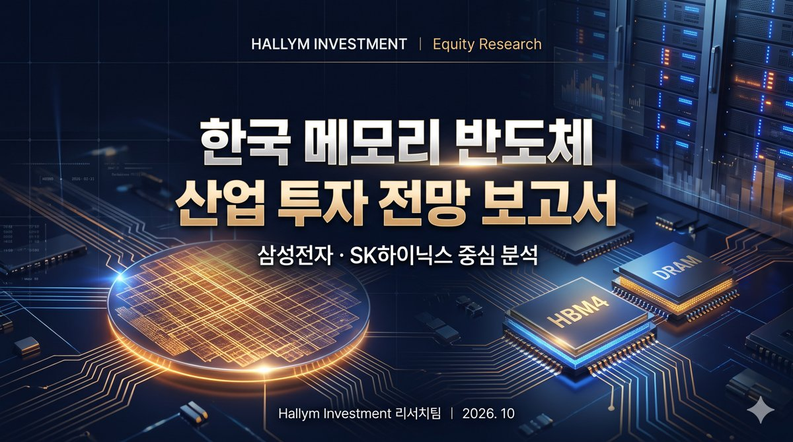

AI와 데이터로 기획부터 제작까지,
스마트워크 프로젝트 포트폴리오
학부 과제에서 수행한 반도체 리서치 보고서, 사내 인사 데이터 다중회귀 분석, 머신러닝 기반 라스트마일 물류 최적화, 그리고 생성형 AI로 구현한 3D 시네마틱 영상과 고해상도 그래픽 결과물을 체계적으로 정리했습니다. 실제 과제 원본 파일 검증과 투명한 AI 제작 과정을 바탕으로 구축되었습니다.
대표 프로젝트: 한국 메모리 반도체 산업 투자 전망
삼성전자와 SK하이닉스의 2026년 3Q 사상 최대 실적 국면을 다각도로 분석한 통합 리서치 패키지입니다. 심층 보고서부터 16슬라이드 발표 덱, AI 3D 인트로 영상, 초고해상도 키 비주얼까지 하나의 파이프라인으로 연계 제작되었습니다.
Hallym Investment | 반도체 산업 투자 전망 리서치 패키지

양사 3분기 합산 영업이익 190.7조 원(삼성전자 107.4조, SK하이닉스 83.3조)과 9월 반도체 수출 603억 달러라는 사상 최대 실적에도 주가가 조정을 받는 현상을 '이익의 크기'가 아닌 '이익 지속 기간'의 관점에서 팩트체크했습니다.
16슬라이드 와이드스크린 덱
보고서의 7개 챕터(현황, 시장전망, 삼성전자, SK하이닉스, 비교분석, 시나리오, 결론)를 16장 발표 스토리라인으로 구조화했습니다.
자바스크립트 기반 PptxGenJS와 PowerPoint를 결합하여 일관된 타이포그래피 계층과 카드형 도표를 프로그래밍 방식으로 배치했습니다.
삼성전자와 SK하이닉스 양대 메모리 칩셋을 상징하는 두 개의 초정밀 패키징 마이크로칩이 골드 회로 기판 위에서 발광하는 12.4초 AI 기반 3D 시네마틱 모션 비디오입니다. (우측 하단 Google Gemini 워터마크 확인)
실리콘 웨이퍼 다이 패턴, HBM4·DRAM 칩셋, 그리고 데이터센터 서버 랙을 융합한 공식 키 비주얼입니다. 데스크톱 와이드(16:9, 2752×1536)와 모바일 카드뉴스(9:16, 1536×2752) 두 가지 규격으로 제작되었습니다.
과제 포트폴리오 전체 탐색
유형별 분류, 검색, 필터, 정렬 기능을 통해 모든 과제 원본과 분석 결과를 확인하고 다운로드할 수 있습니다.
포트폴리오 검증 원칙 및 투명성 안내
본 포트폴리오는 학술적 정직성과 데이터 무결성을 최우선 원칙으로 삼아 구축되었습니다.
원본 파일 기반 팩트체크
실제 과제 원본 파일(DOCX, PPTX, HWPX, MP4, MOV, PNG)에 기재된 정량 수치와 분석 내용만을 충실히 반영했습니다. 파일에서 확인되지 않은 과장된 성과나 비공개 프롬프트는 일체 임의 작성하지 않았습니다.
AI 도구 활용의 투명한 공개
Office 문서 메타데이터(Claude 생성 태그, PptxGenJS 라이브러리)와 비디오/이미지 우측 하단의 Google Gemini 공식 워터마크 등 파일 자체에서 기술적으로 입증 가능한 AI 활용 내역을 정직하게 명시했습니다.
원본 에셋 100% 무수정 보존
대학 과목 제출 당시의 원본 파일 10종을 assets 디렉터리에 단 1바이트의 변경 없이 온전히 보존하였으며, 웹사이트에서 누구나 원본 파일을 직접 다운로드하여 교차 검증할 수 있도록 제공합니다.